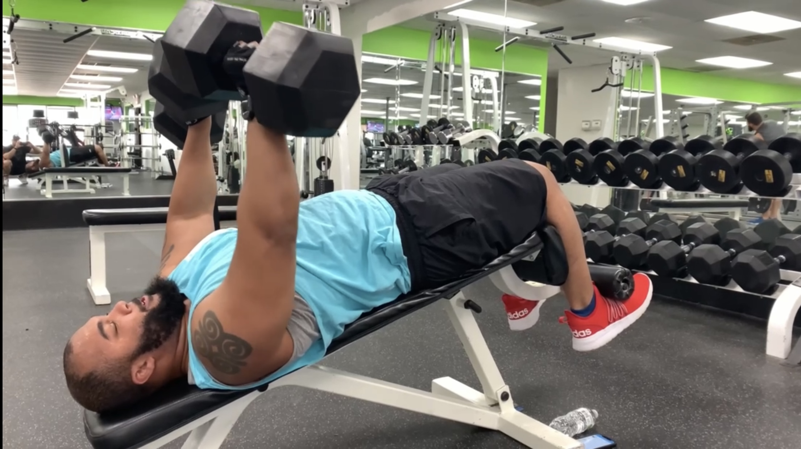
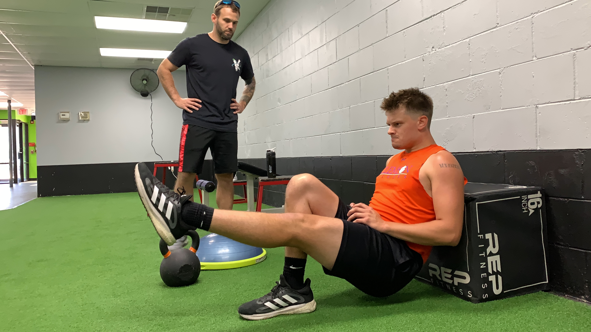
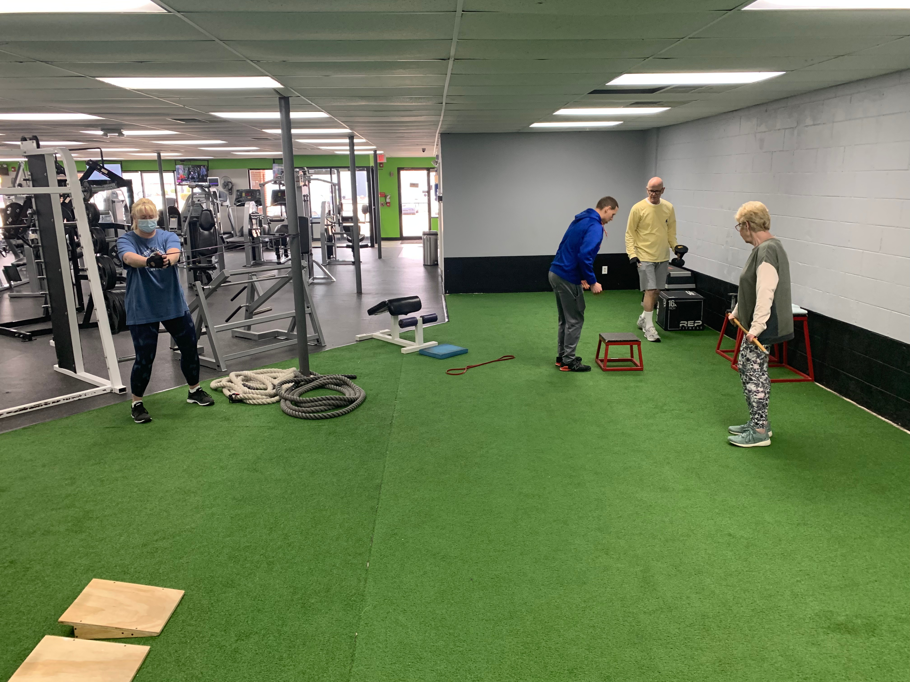

Looking for a coach? Kinetic Fitness & Performance trainers will guide and motivate you with a program tailored to your goals.
Our Trainers can help you with the following:
Regardless of your goal and where you are in your fitness journey, our Training Programs are designed to benefit all types of clientele. Perfect for those relatively new to fitness or with common goals like losing weight, getting toned, gaining strength, and improving quality of life.
What to typically expect:

Kinetic Fitness & Performance elite training helps athletes build the strength, speed, and power to reach the next level.
Elite Training is designed specifically for those looking to take their training to the next level. Not recommended for beginners. This type of training utilizes advanced scientific methods, and is usually done for a pre determined duration of weeks to increase explosiveness, power, speed, and overall athleticism. Perfect for athletes looking to make some serious improvements during their offseason, and peak at the right time.What to typically expect:

Semi-private group sessions can work well for both General and Elite Training. We like to group 2-4 like minded individuals together to make for a fun and more interactive experience. Having similar goals and fitness levels, along with some friendly competition at times, provides motivation and support from both coach and peers!
What to typically expect: